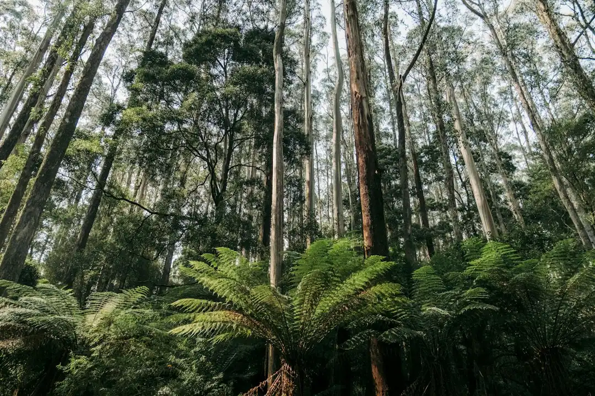

For homeowners comparing tree services sydney options, the useful starting point is the tree, access, council position and the result the property owner needs.
Tree Services Sydney Explained
Sydney Tree Services presents tree work as a scoped property job. A useful brief identifies the tree, suburb or postcode, nearby structures, access limits, power line proximity, whether the stump is included and the result the owner wants.
The published service list includes removal, pruning, stump grinding, palm care, hedge trimming and arborist reports. Enquiries are scoped around the tree, access, council requirements and the intended outcome. That order helps separate routine maintenance from work that may need a qualified arborist, council paperwork, specialised rigging or a written report.
- Ask about pruning when the aim is selective canopy work, clearance or shape, and confirm whether AS 4373 is the reference point.
- Ask about removal when the tree itself is to come out, especially where access, buildings or power lines affect method.
- Ask about an arborist report when the question involves council, risk or development rather than only cutting work.
What Changes A Sydney Quote
The guide gives a broad 2026 residential removal range in Sydney, from about $800 for a small accessible tree to $6,000 or more for a large tree near buildings or power lines. It also says final price depends on tree size, species, access and whether stump grinding is included. Treat the range as a prompt for a proper quote, not a fixed offer.
A written quote should state what is included before work is approved. The published process points to scope, timing and disposal details, plus stump grinding where relevant. Owners should ask whether green waste removal, stump work, difficult access, traffic constraints and any report are included or excluded.
If the decision has moved from maintenance to taking a tree out, the companion guide on tree removal planning in Sydney is the natural cross reference.
Council And Standard Checks
The published FAQ says many Sydney councils require a permit or development consent to remove or heavily prune protected trees under a Tree Preservation Order or Development Control Plan. It also says local rules vary and often use DBH thresholds or protected species lists. Check the relevant council position before approving major cutting.
For pruning, the named technical reference is Australian Standard AS 4373. The guide says qualified arborists carry out selective pruning to that standard and distinguishes this from indiscriminate lopping. Owners should ask how the proposed cut pattern supports the objective and whether the quote describes the pruning outcome clearly.
- Ask whether the tree may be protected before confirming removal or heavy pruning.
- Ask whether photos, DBH details, species information or council documents are needed before a visit.
- Ask whether the quote is for pruning, removal, stump grinding, a report, or a combined scope.
Who This Applies To
This guide is most relevant to residential property owners in the Sydney regions named by the published guide, including the North Shore, Northern Beaches, Eastern Suburbs, Inner West, Hills District, Western Sydney and Sutherland Shire.
The practical situations are specific: a hazardous limb, a full site clearance, routine pruning, a stump left after earlier work, palm or hedge care, or an arborist report for council, risk or development. The source material does not claim one fixed approach for every suburb. Access, nearby buildings, overhead services, protected tree rules and disposal expectations shape the first site visit more than a suburb name alone.
Before You Send An Enquiry
A strong enquiry gives the contractor enough detail to decide what expertise is needed. The published page asks for the tree, suburb and what needs to happen, and says a site visit can lead to a fixed price written quote. Photos can help frame the first discussion, but the process still points back to reviewed scope before work starts.
Where power lines are nearby, the published FAQ says tree work in NSW must follow SafeWork NSW and the relevant electricity network distributor minimum approach distances, and that only trained, authorised operators may work closer than the prescribed distance. Flag overhead lines, service drops or difficult access points at enquiry stage.
Before approval, read the quote for the exact work, stump grinding, waste handling, timing and any council or report issue that remains open.
- Describe the tree. Send the suburb or postcode, tree location, access limits and the outcome you want.
- Flag constraints. Mention buildings, fences, power lines, protected tree concerns and whether the stump is included.
- Ask for scope. Request a written quote that states the work, timing, disposal details and exclusions.
- Check approvals. Confirm whether council permission, consent or an arborist report is needed before approving major work.
| Situation | Likely pathway | Question to ask |
|---|---|---|
| Selective canopy work | Pruning by a qualified arborist | Will the pruning be carried out to AS 4373? |
| Tree to be removed | Removal quote with access and disposal scope | Is stump grinding included or separate? |
| Council, risk or development issue | Arborist report before physical work | What information is needed for the report? |
This guide covers Sydney tree project scoping, quotes, council checks, pruning standards, reports and enquiry preparation.